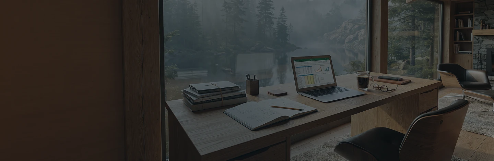
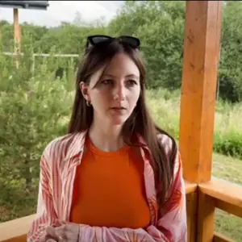
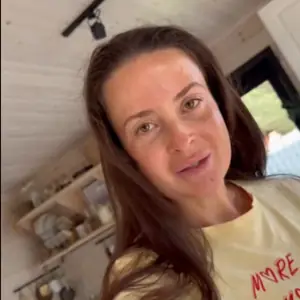
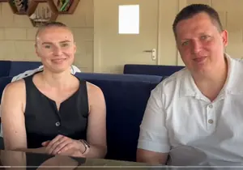
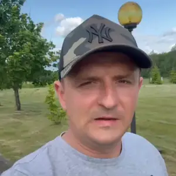
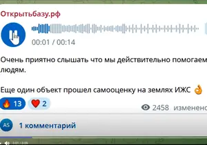
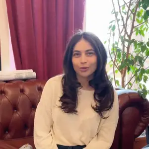

«Домики стояли пустыми с понедельника по четверг. Разобрали каналы продаж, пересобрали цены по сезонам и сценарий заезда. К августу будни стали приносить больше, чем выходные годом раньше.»

«Держал в голове десяток вариантов и не мог выбрать. Посчитали экономику до планировки — половина идей отпала сама.»
«Хотели ставить котельную и тянуть сети под будущие двадцать домов. Посчитали загрузку — на первую очередь хватает восьми.»
«Сами пробовали пройти классификацию и застряли на документах. Собрали самооценку и подали заново, вопросов у комиссии не осталось.»
«Раньше всё держалось на мне: без меня персонал не знал, что делать. Появились регламенты под каждую роль.»
Расскажите, что изменилось на объекте. Нам важна цифра до и после — она полезнее любых хороших слов.
Оставить отзыв




